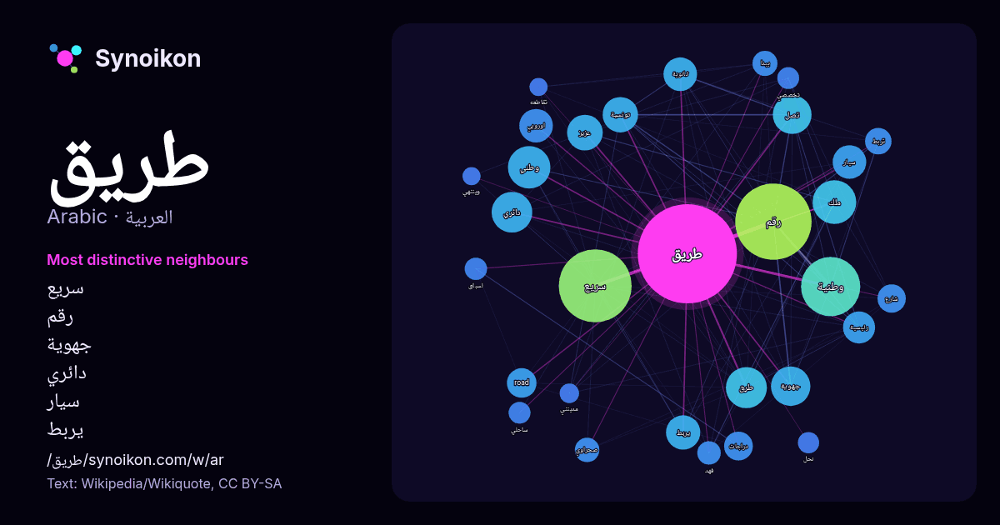

العربية · قائمة كلمات اليوم
طريق
“road” · الكلمات الموجودة حولها في 1615 ورودًا من ويكيبيديا, Wikiquote.

الجيران الأكثر تميّزًا
- سريع 122×
- رقم 73×
- جهوية 61×
- دائري 58×
- سيار 45×
- يربط 40×
- تونسية 36×
- وطنية 36×
- road 35×
- تصل 35×
- طرق 26×
- عزيز 26×
- تربط 25×
- صحراوي 23×
- ثانوية 22×
- دراجات 20×
- لسباق 20×
- تخصصي 19×
- فهد 19×
- اوروبي 18×
× = كم مرة أكثر مما في نصوص ويكيبيديا العامة.
الجيران الأكثر تكرارًا
- رقم 232
- سريع 212
- وطنية 140
- ملك 76
- وطني 72
- فيلم 71
- طرق 67
- دائري 66
- جهوية 62
- عبد 62
- تصل 60
- عزيز 51
- تونسية 50
- جنوب 48
- مدينة 47
- يربط 47
- اوروبي 45
- ثانوية 45
- سيار 45
- رئيسي 41
في السياق
- الطريق هو شريط أرضي به مسارات معدة لحركة السيارات وغيرها من المركبات التي تتحرك على عجلات. والطرق تصل المناطق الحضرية بعضها ببعض، كما تصلها بالمناطق الريفية Wikipedia snippets · طريق
- طريق 70. إذا وصلت لهذه الصفحة عبر وصلة داخليّة، فضلا غيّر تلك الوصلة لتقود مباشرة إلى المقالة المعنيّة. قد يقصد من «طريق 70» : طريق 70 (الأردن): طريق Wikipedia snippets · طريق 70 (توضيح)
- يا طريق هو أول ألبوم غنائي للمغني المصري عمرو دياب. صدر في سبتمبر 1983 من قبل شركة صوت المدينة. الزمن تحميل البوم عمرو دياب يا طريق 1983، مؤرشف من الأصل Wikipedia snippets · يا طريق (ألبوم)
- طريق بغداد (كركوك) هذه صفحة توضيح تحتوي قائمة صفحات مقالات متعلّقة بعنوان طريق بغداد. إذا وصلت لهذه الصفحة عبر وصلة داخليّة، فضلا غيّر تلك الوصلة لتقود Wikipedia snippets · طريق بغداد (توضيح)
- الطريق الرئيسي أو الطريق السريع الرئيسي أو الطريق الاستراتيجي هو طريق رئيسي يربط عادة بين مدينتين أو أكثر وموانئ ومطارات وأماكن أخرى، وهو الطريق الموصى Wikipedia snippets · طريق رئيسي
- العاصمة القاهرة بصعيد مصر: طريق الصعيد الحر المعروف بالطريق الصحراوي الشرقي طريق مزدوج سريع يعرف باسم الطريق الصحراوي الغربي طريق الصعيد الزراعي القديم هذه Wikipedia snippets · طريق الصعيد (توضيح)
- الطريق السريع 30 هو طريق سريع بين الشرق والغرب في الأردن. يبدأ من حدود السعودية في مركز حدود العمري ويربطه بالزرقاء وعمان. ثم يستمر في المرور غربًا عبر Wikipedia snippets · طريق 30 (الأردن)
- الطريق السريع 10 هو طريق سريع يقع شمال الأردن ويربط بين الشرق والغرب في الشمال. يبدأ الطريق عند مركز حدود الكرامة، من الطريق السريع 1 على الحدود العراقية Wikipedia snippets · طريق 10 (الأردن)
كلمات أخرى
- أغنية
- إله
- تاريخ
- جبل
- جرس
- جزيرة
- جسر
- حديقة
- حصان
- حقيقة
- حياة
- خبز
- خريطة
- خريف
- ذهب
- زمن
- ساعة
- شاي
- شتاء
- صحة
- صحراء
- صمت
- صيف
- طبيعة
- طعام
- ظل
- عائلة
- عاصفة
- عسل
- علم
- عمل
- غابة
- فن
- قطار
- قطة
- قلب
- قوة
- كلب
- لغة
- ماء
- مال
- مدينة
- مرآة
- مطر
- ملح
- مناخ
- موت
- نجم
- والدة
حُسبت مسبقًا في 2026-10-09 بالإعدادات الافتراضية (±5 كلمات، مدوّنة متوسطة). يمكن للخريطة التفاعلية تحديثها ببيانات حية.
واجهة مترجمة آليًا؛ نرحب بالتصحيحات.